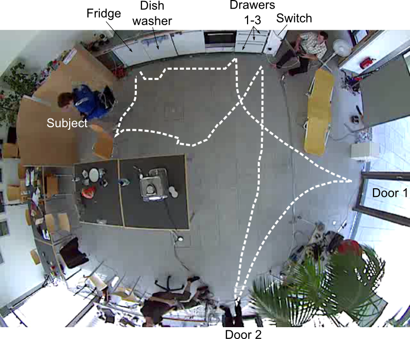
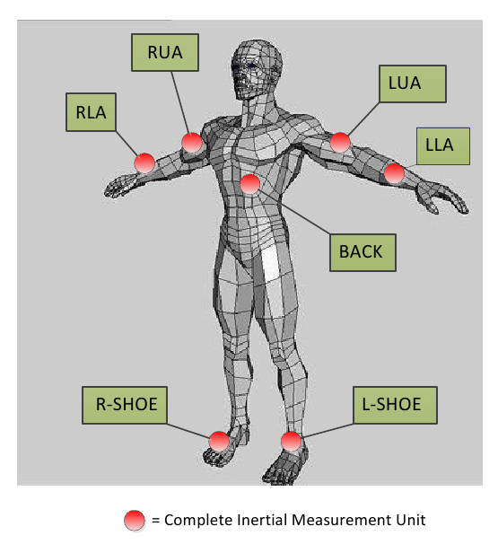
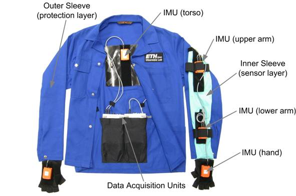
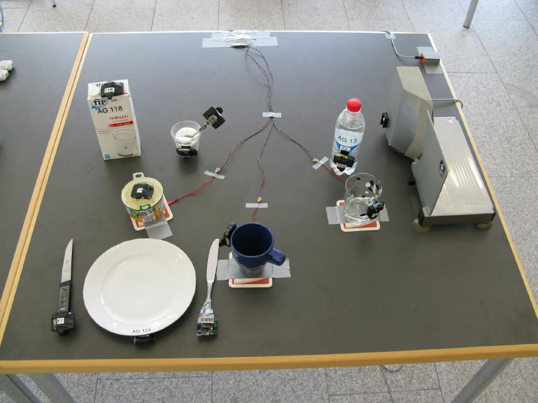
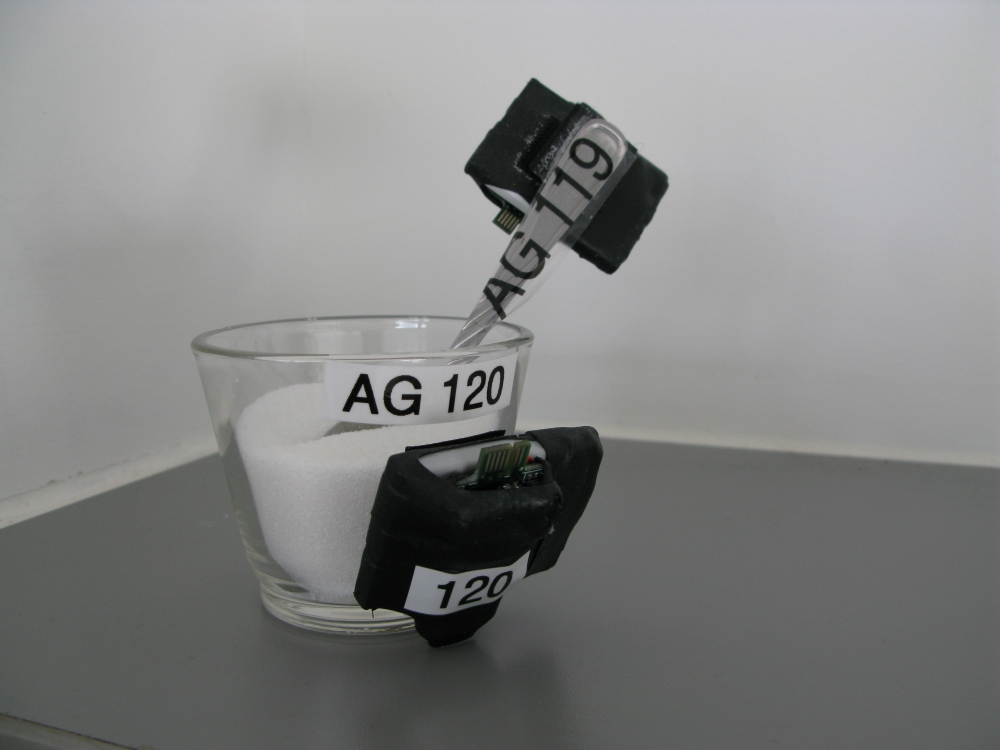
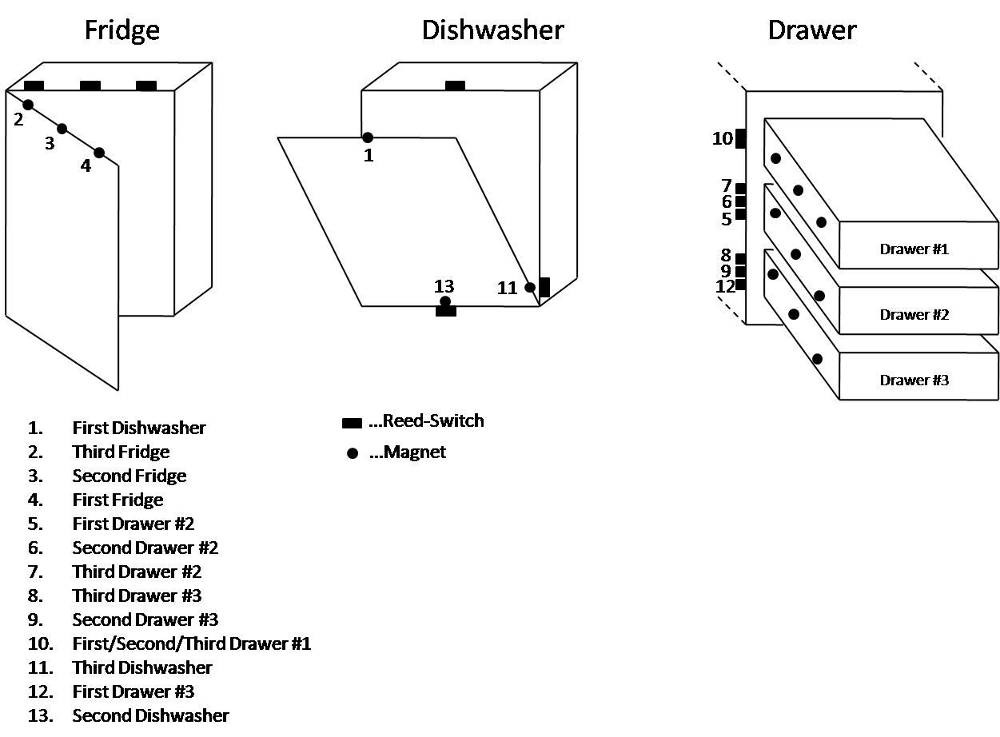
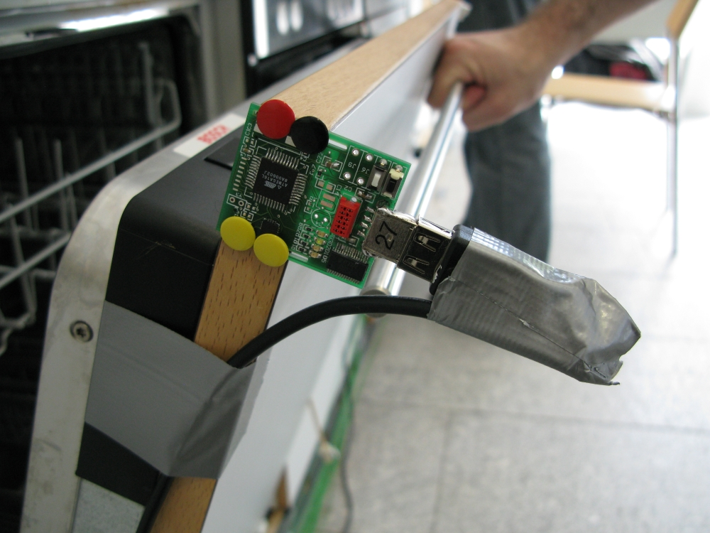
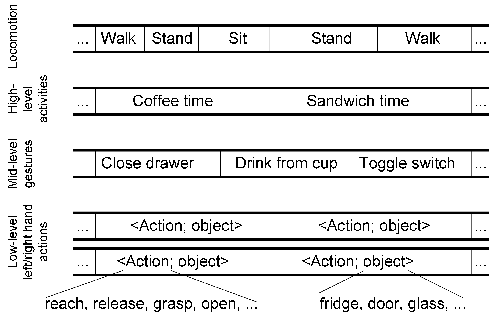

OPPORTUNITY Dataset for Human Activity Recognition from
Wearable, Object, and Ambient Sensors
We recommend to refer to this
dataset for short as the "OPPORTUNITY Activity Recognition
Dataset" in publications.
Summary
The OPPORTUNITY Dataset for Human
Activity Recognition from Wearable, Object, and Ambient Sensors
(hereafter OPPORTUNITY dataset) is a dataset devised to benchmark
human activity recognition algorithms (classification, automatic
data segmentation, sensor fusion, feature extraction, etc).
This dataset captures the challenges common to many other activity
recognition scenarios. Thus, methods proved to be robust on this
dataset can likely be successfully translated to other challenging
activity recognition problems.
A subset of this dataset was used for the "OPPORTUNITY
Activity Recognition Challenge" organized for the 2011 IEEE conf on Systems, Man and
Cybernetics Workshop on "Robust
machine learning techniques for human activity recognition".
The dataset comprises the readings of motion sensors recorded while
users executed typical daily activities in a room simulating a
studio flat.
The characteristics are:
- Body-worn sensors: 7 inertial measurement units (IMUs), 12 3D
acceleration sensors, 4 3D coordinates from a localization
system
- Object sensors: 12 objects are instrumented with wireless
sensors measuring 3D acceleration and 2D rate of turn
- Ambient sensors: 13 switches and 8 3D acceleration sensors in
kitchen appliances and furniture
- Recordings: 4 users, 6 runs per users. Of these, 5 are
Activity of Daily Living (ADL) runs, where the users execute in
a very natural manner daily activities. The 6th run is a "drill"
run, where users execute a scripted sequence of activities. The
ADL runs are characterized by larger variability in the way
activities are executed, while activities in the drill run tend
to be executed with less variability
- Annotations/classes: the activities of the user in the
scenario are annotated on different levels. There are separate
annotation tracks for: 4 "modes of locomotion" classes (sit,
stand, lie, walk); a rich set of low-level action classes
relating 13 actions to 23 objects; 17 mid-level gesture classes
(e.g. open/close door/fridge/dishwasher, drink, toggle ...); and
5 high-level activity classes
- Data format: synchronized sensor readings and annotations in
text matrix format (one line per sample, one column per sensor
channel, last columns for annotations
- Data characteristics: missing data due to data loss are
indicated by "NaN" (not-a-number) in the corresponding matrix
entry. Data loss mostly affects wireless sensors.
- Instances: all subjects and all recordings combined; modes of
locomotion: 3653, mid-level gestures: 2551.
The present dataset extends the dataset released for the
"OPPORTUNITY Activity Recognition Challenge" in the following
manner:
- It comprises the complete label set (some labels which were
withdrawn from the files released for the challenge in order to
evaluate the participant's submissions)
- It comprises additional label kinds: the low-level action
classes, and the high-level activity classes
- It contains additional sensors: all the object and ambient
sensors, and additional channels from the body-worn sensors
(e.g. quaternions from the inertial measurement units).
Note that this dataset remains a subset of the full OPPORTUNITY
dataset described in [1].
Detailed description [1]
Recording scenario

Room in which the user's activities are recorded.
The activity recognition environment and scenario has been designed
to generate many activity primitives, yet in a realistic manner.
Subjects operated in a room simulating a studio flat with a
deckchair, a kitchen, doors giving access to the outside, a coffee
machine, a table and a chair.
We achieved a natural execution of activities by instructing users
to follow a high-level script but leaving them free interpretation
as how to achieve the high-level goals. We furthermore encouraged
them to perform as naturally as possible with all the variations
they were used to.
For each subject we recorded 6 different runs. Five of them, termed
activity of daily living (ADL), followed a given scenario as
detailed below. The remaining one, a drill run, was designed to
generate a large number of activity instances. The ADL run consists
of temporally unfolding situations. In each situation (e.g.
preparing sandwich), a large number of action primitives occur (e.g.
reach for bread, move to bread cutter, operate bread cutter).
ADL run
The ADL run consists of temporally unfolding situations:
- Start: lying on the deckchair, get up
- Groom: move in the room, check that all the objects are in the
right places in the drawers and on shelves
- Relax: go outside and have a walk around the building
- Prepare co�fee: prepare a coffee with milk and sugar using the
coffee machine
- Drink coffee: take coffee sips, move around in the environment
- Prepare sandwich: include bread, cheese and salami, using the
bread cutter and various knifes and plates
- Eat sandwich
- Cleanup: put objects used to original place or dish washer,
cleanup the table
- Break: lie on the deckchair
Drill run
The drill run consists of 20 repetitions of the following sequence
of activities:
- Open then close the fridge
- Open then close the dishwasher
- Open then close 3 drawers (at different heights)
- Open then close door 1
- Open then close door 2
- Toggle the lights on then off
- Clean the table
- Drink while standing
- Drink while seated
Sensors
Body-worn sensors
The body-worn sensors include 7 inertial measurement units and 12 3D
acceleration sensors.
The inertial measurement units provide readings of: 3D acceleration,
3D rate of turn, 3D magnetic field, and orientation of the sensor
with respect to a world coordinate system in quaternions. Five
sensors on the upper body are deployed using a jacket, thereby
ensuring reproducible sensor placement. The remaining two sensors
are mounted on the user's shoes.
The acceleration sensors provide 3D acceleration. As these sensors
are wireless, more data loss are expected in these channels.
Four tags for an ultra-wideband localization system are placed on
the left/right front/back side of the shoulder. These deliver
3D coordinates of the tag in a room coordinate system.
|

Placement of the inertial
measurement units on-body with the name of the sensor as
appearing in the data files.
|
Placement of the 3D
acceleration sensors on-body with the name of the sensor
as appearing in the data files.
|

Jacket in which the inertial measurement units are deployed on the
upper body.
Object sensors
12 objects are instrumented with wireless sensors measuring 3D
acceleration and 2D rate of turn. This allows to detect which
objects are used, and possibly also the kind of usage that is made
of them.

Most objects manipulated by the user are instrumented with a
wireless sensor comprising a 3D accelerometer and a 2D
gyroscope.
In the figure the sensors attached e.g. to the milk bottle,
cutlery, cup and glass are visible.
|

Close up on the sugar container and the spoon within it,
with a sensor attached on both elements.
|
Ambient sensors
Ambient sensors include 13 switches and 8 3D acceleration sensors in
drawers, kitchen appliances and doors.
The reed switches are placed in triplets on the fridge, dishwasher
and drawer 2 and drawer 3. They may be used to detect three states
of the furniture element: closed, half open, and fully open. The
drawer 1 is instrumented with a single reed switch. It fires for the
closed, half-open and fully open position, but does not allow do
distinguish the state of the drawer without additional information.
The acceleration sensors may allow to assess if an element of
furniture is used, and whether it may be opened or closed.

One reed switch placed on the dishwasher. When the
dishwasher is closed the switch (up) is activated by a
magnet placed on the dishwasher door (down), yielding a
binary signal indicating if the door is open or closed.
|

Placement of the reed switches on the furniture
|

3D acceleration sensor attached to the dishwasher.
Annotations

The annotations are done on five
‘tracks’. One track contains modes of locomotion (e.g. sitting,
standing, walking). Two other tracks indicate the actions of the
left and right hand (e.g. reach, grasp, release), and to which
object they apply (e.g. milk, switch, door).
The fourth track indicates the high level activities (e.g. prepare
sandwich). The high level activities relate to the situations
indicated in the description of the ADL runs as follows (in
parenthesis the number of the situations indicated above):
relaxing (1, 9), early morning (2, 3), coffee time (4, 5),
sandwich time (6, 7), cleanup (8).
The mid-level gesture annotations is
generated automatically from the low-level hand actions. It
comprises coarser characterization of the user's activities. For
instance the low-level annotations "reach door" and "open door"
are combined into a single "open door" mid-level annotation. Here,
the mid-level annotations comprise actions of the left and right
hand indiscriminately. However, in practice, the users mostly
interacted with the environment with their right hand. We
recommend to use the mid-level annotations in first attempts to
use this dataset.
Files
The dataset contains the following files:
- dataset/S<n>-ADL<i>.dat:
i's recording of user n in the activity of daily living run
- dataset/S<n>-Drill.dat:
recording of user n in the drill run
- dataset/column_names.txt:
explanations of the columns in the data file
- dataset/label_legend.txt:
meaning of the label number
Documentation is in the /doc directory:
- doc/documentation.html:
this file
- doc/dataset_statistics.pdf:
basic statistics on the locomotion and mid-level gesture
instances
- doc/INSS_cameraready.pdf:
publication [1]
- doc/OPPORTUNITY_D5.1.pdf:
technical details on the recording
- doc/ActivityRecognitionBaselines.pdf:
report of the baseline activity recognition accuracy with the
methods described in reference [2]. The file includes the
baseline results for the original OPPORTUNITY Activity
Recognition Challenge dataset, and the present dataset. Note the
slight differences in baseline values that result from the
improved annotations and channel alignments.
- mlgesture_instances.tex:
count of instances of mid-level gestures
- locomotion_instances.tex:
count of instances of modes of locomotion
Scripts are in the /scripts directory:
- scripts/DataExplorer/:
dataset visualization tool, allows to select class ID, sensor
channels and instances and visualize the signals. See the readme
file for more information.
- scripts/benchmark/:
baseline benchmarks as published in [2]. See readme file for
more information.
Applications
This dataset offers �a rich playground to assess methods such as,
e.g:
- Classification, (semi-) supervised machine learning
- Automatic segmentation
- Unsupervised structure discovery
- Data imputation
- Multi-modal sensor fusion
- Sensor network research
- Transfer learning, multitask learning
- Sensor selection
- Feature extraction
- Classifier calibration and adaptation
- ...
Notes about data and label quality
Recording a complex multimodal dataset implies data losses and
sensor data alignment challenges. These are issues which are common
in real-world deployment of complex multimodal sensor systems. This
dataset aims to captures these real-world issues so that one can
devise and assess robust activity recognition methods. Consequently
we limited the amount of post-processing of the data. The only
post-processing that was performed is the alignment of sensor
channels into a common matrix format (i.e. the multiple independent
devices recording data were synchronized in post-processing), and
unit conversion of the sensor data. In particular, there is no data
imputation to compensate for missing data.
Body-worn sensors
Among body-worn sensors, the data from the inertial measurement
units are of highest quality. They were acquired with a wired
system, leading to little to no data loss. The placement of the
sensors is very reproducible among users and recording runs, as the
sensors were integrated within a jacket. We would recommend to first
consider this data for the high quality provided.
The 3D acceleration sensors suffer from some data losses as the
sensors are wireless. This allows to study imputation techniques,
and the larger number of these sensors allows to investigate data
fusion methods to compensate for data losses.
The tags providing indoor 3D localization are extremely noisy. We
recommend to use this information only after careful assessment.
Object sensors
The sensors in the objects suffer from some data loss as they are
wireless. Especially the objects placed in the dishwasher in the
"cleaning" phase of the ADL runs suffer from more data losses due to
the occlusions when the dishwasher is closed.
Ambient sensors
The ambient sensors suffer from little to no data loss as they were
acquired by a wired system.
Annotation quality
The activities were executed in a very realistic manner. This
leads, for instance, to interleaving or merging of activities,
which are challenging to annotate.
Therefore, there may be jitter between the annotated time spans of
an activity and its true time span. We nevertheless did the best to
ensure consistency in the annotation strategy.
The boundaries of high-level activities cannot be pinpointed to a
specific time due to the way users were allowed to interleave
activities (e.g. finishing to eat the sandwich while already
starting the cleanup). Rather one should assume a smoother
transition between the high level activities.
The low-level action annotations are also hard to annotate due to
their extremely short duration.
The mid-level gesture annotations are automatically generated from
the low-level gesture annotations. They combine multiple low-level
annotations in a single one of longer duration. For instance, "reach
door" followed by "open door" (low-level annotation) is combined
into a single "open door" mid-level annotation. These annotations
are recommended for a first assessment of methods as they are last
longer than the low-level actions and thus are less sensitive
to annotation jitter.
The annotation of modes of locomotion is also challenging in this
environment as the way a user moves in the kitchen consists often of
very short gait sequences, sometimes consisting of even only a
single step.
Other remarks and recommendations
The sensors were recorded by multiple independent systems and
aligned in post-processing. Alignment was done in the most careful
manner, however the alignment accuracy remains limited due to
technical data acquisition reasons. We recommend the users of this
dataset to keep in mind that there may be a jitter between the
channels of sensors acquired by different systems (e.g. between a
wireless sensor on body and a wired inertial measurement unit on
body). This jitter may be of the order of 100ms.
Note that the segmentation of human activities is - to some extent -
a subjective process. Therefore there may be a jitter of a couple of
hundreds of milliseconds between what two observers would annotate.
The possibility of label jitter must be kept in mind in the
evaluation of activity recognition methods.
We recommend first users of this dataset to consider the subset of
data used for the OPPORTUNITY Activity Recognition Challenge at
first.
OPPORTUNITY Activity Recognition Challenge subset
The "OPPORTUNITY
Activity Recognition Challenge" organized for the 2011 IEEE conf on Systems, Man and
Cybernetics Workshop on "Robust
machine learning techniques for human activity recognition"
used a subset of this dataset.
This subset contains only the on-body sensors without quaternion
data, and the annotations of modes of locomotion and mid-level
gestures.
Specifically, the following columns were used for the challenge:
1-37, 38-46, 51-59, 64-72, 77-85, 90-98, 103-134, 244, 250.
Note that some labels have been improved since the challenge, as
well as the synchronization between the sensor channels. This
results in slightly different files compared to the original
challenge, although it does not influence the baseline benchmarks in
any significant manner.
The baseline performance results are provided in doc/ActivityRecognitionBaselines.pdf
for the original challenge dataset as well as this release.
How to start?
For activity recognition using on-body sensors we recommend to start
with the subset of data used for the OPPORTUNITY Activity
Recognition Challenge. We further recommend to consider at first the
data from the inertial measurement units as their quality is
highest, before considering the other modalities which may require
data imputation strategies.
Baseline benchmarks
Baseline benchmarks for the OPPORTUNITY Activity Recognition
Challenge subset of the dataset are available in reference [2].
Scripts to replicate the benchmarks are provided in scripts/benchmark.
Attribute Information:
Each .dat file contains a matrix of data in text
format. Each line contains the sensor data sampled at a given time
(sample rate: 30Hz). There are 250 columns. The first contains the
time at which the data was sampled. The last 7 columns contain the
label (attribute). The other columns contain the data channels of
the sensors. Missing data is indicated by "NaN" instead of a
number in the matrix entry.
Column: 1 MILLISEC
Column: 2 Accelerometer RKN^ accX; value = round(original_value),
unit = milli g
Column: 3 Accelerometer RKN^ accY; value = round(original_value),
unit = milli g
Column: 4 Accelerometer RKN^ accZ; value = round(original_value),
unit = milli g
Column: 5 Accelerometer HIP accX; value = round(original_value),
unit = milli g
Column: 6 Accelerometer HIP accY; value = round(original_value),
unit = milli g
Column: 7 Accelerometer HIP accZ; value = round(original_value),
unit = milli g
Column: 8 Accelerometer LUA^ accX; value = round(original_value),
unit = milli g
Column: 9 Accelerometer LUA^ accY; value = round(original_value),
unit = milli g
Column: 10 Accelerometer LUA^ accZ; value = round(original_value),
unit = milli g
Column: 11 Accelerometer RUA_ accX; value = round(original_value),
unit = milli g
Column: 12 Accelerometer RUA_ accY; value = round(original_value),
unit = milli g
Column: 13 Accelerometer RUA_ accZ; value = round(original_value),
unit = milli g
Column: 14 Accelerometer LH accX; value = round(original_value),
unit = milli g
Column: 15 Accelerometer LH accY; value = round(original_value),
unit = milli g
Column: 16 Accelerometer LH accZ; value = round(original_value),
unit = milli g
Column: 17 Accelerometer BACK accX; value = round(original_value),
unit = milli g
Column: 18 Accelerometer BACK accY; value = round(original_value),
unit = milli g
Column: 19 Accelerometer BACK accZ; value = round(original_value),
unit = milli g
Column: 20 Accelerometer RKN_ accX; value = round(original_value),
unit = milli g
Column: 21 Accelerometer RKN_ accY; value = round(original_value),
unit = milli g
Column: 22 Accelerometer RKN_ accZ; value = round(original_value),
unit = milli g
Column: 23 Accelerometer RWR accX; value = round(original_value),
unit = milli g
Column: 24 Accelerometer RWR accY; value = round(original_value),
unit = milli g
Column: 25 Accelerometer RWR accZ; value = round(original_value),
unit = milli g
Column: 26 Accelerometer RUA^ accX; value = round(original_value),
unit = milli g
Column: 27 Accelerometer RUA^ accY; value = round(original_value),
unit = milli g
Column: 28 Accelerometer RUA^ accZ; value = round(original_value),
unit = milli g
Column: 29 Accelerometer LUA_ accX; value = round(original_value),
unit = milli g
Column: 30 Accelerometer LUA_ accY; value = round(original_value),
unit = milli g
Column: 31 Accelerometer LUA_ accZ; value = round(original_value),
unit = milli g
Column: 32 Accelerometer LWR accX; value = round(original_value),
unit = milli g
Column: 33 Accelerometer LWR accY; value = round(original_value),
unit = milli g
Column: 34 Accelerometer LWR accZ; value = round(original_value),
unit = milli g
Column: 35 Accelerometer RH accX; value = round(original_value),
unit = milli g
Column: 36 Accelerometer RH accY; value = round(original_value),
unit = milli g
Column: 37 Accelerometer RH accZ; value = round(original_value),
unit = milli g
Column: 38 InertialMeasurementUnit BACK accX; value =
round(original_value / 9.8 * 1000), unit = milli g
Column: 39 InertialMeasurementUnit BACK accY; value =
round(original_value / 9.8 * 1000), unit = milli g
Column: 40 InertialMeasurementUnit BACK accZ; value =
round(original_value / 9.8 * 1000), unit = milli g
Column: 41 InertialMeasurementUnit BACK gyroX; value =
round(original_value * 1000), unit = unknown
Column: 42 InertialMeasurementUnit BACK gyroY; value =
round(original_value * 1000), unit = unknown
Column: 43 InertialMeasurementUnit BACK gyroZ; value =
round(original_value * 1000), unit = unknown
Column: 44 InertialMeasurementUnit BACK magneticX; value =
round(original_value * 1000), unit = unknown
Column: 45 InertialMeasurementUnit BACK magneticY; value =
round(original_value * 1000), unit = unknown
Column: 46 InertialMeasurementUnit BACK magneticZ; value =
round(original_value * 1000), unit = unknown
Column: 47 InertialMeasurementUnit BACK Quaternion1; value =
round(original_value * 1000), unit = none
Column: 48 InertialMeasurementUnit BACK Quaternion2; value =
round(original_value * 1000), unit = none
Column: 49 InertialMeasurementUnit BACK Quaternion3; value =
round(original_value * 1000), unit = none
Column: 50 InertialMeasurementUnit BACK Quaternion4; value =
round(original_value * 1000), unit = none
Column: 51 InertialMeasurementUnit RUA accX; value =
round(original_value / 9.8 * 1000), unit = milli g
Column: 52 InertialMeasurementUnit RUA accY; value =
round(original_value / 9.8 * 1000), unit = milli g
Column: 53 InertialMeasurementUnit RUA accZ; value =
round(original_value / 9.8 * 1000), unit = milli g
Column: 54 InertialMeasurementUnit RUA gyroX; value =
round(original_value * 1000), unit = unknown
Column: 55 InertialMeasurementUnit RUA gyroY; value =
round(original_value * 1000), unit = unknown
Column: 56 InertialMeasurementUnit RUA gyroZ; value =
round(original_value * 1000), unit = unknown
Column: 57 InertialMeasurementUnit RUA magneticX; value =
round(original_value * 1000), unit = unknown
Column: 58 InertialMeasurementUnit RUA magneticY; value =
round(original_value * 1000), unit = unknown
Column: 59 InertialMeasurementUnit RUA magneticZ; value =
round(original_value * 1000), unit = unknown
Column: 60 InertialMeasurementUnit RUA Quaternion1; value =
round(original_value * 1000), unit = none
Column: 61 InertialMeasurementUnit RUA Quaternion2; value =
round(original_value * 1000), unit = none
Column: 62 InertialMeasurementUnit RUA Quaternion3; value =
round(original_value * 1000), unit = none
Column: 63 InertialMeasurementUnit RUA Quaternion4; value =
round(original_value * 1000), unit = none
Column: 64 InertialMeasurementUnit RLA accX; value =
round(original_value / 9.8 * 1000), unit = milli g
Column: 65 InertialMeasurementUnit RLA accY; value =
round(original_value / 9.8 * 1000), unit = milli g
Column: 66 InertialMeasurementUnit RLA accZ; value =
round(original_value / 9.8 * 1000), unit = milli g
Column: 67 InertialMeasurementUnit RLA gyroX; value =
round(original_value * 1000), unit = unknown
Column: 68 InertialMeasurementUnit RLA gyroY; value =
round(original_value * 1000), unit = unknown
Column: 69 InertialMeasurementUnit RLA gyroZ; value =
round(original_value * 1000), unit = unknown
Column: 70 InertialMeasurementUnit RLA magneticX; value =
round(original_value * 1000), unit = unknown
Column: 71 InertialMeasurementUnit RLA magneticY; value =
round(original_value * 1000), unit = unknown
Column: 72 InertialMeasurementUnit RLA magneticZ; value =
round(original_value * 1000), unit = unknown
Column: 73 InertialMeasurementUnit RLA Quaternion1; value =
round(original_value * 1000), unit = none
Column: 74 InertialMeasurementUnit RLA Quaternion2; value =
round(original_value * 1000), unit = none
Column: 75 InertialMeasurementUnit RLA Quaternion3; value =
round(original_value * 1000), unit = none
Column: 76 InertialMeasurementUnit RLA Quaternion4; value =
round(original_value * 1000), unit = none
Column: 77 InertialMeasurementUnit LUA accX; value =
round(original_value / 9.8 * 1000), unit = milli g
Column: 78 InertialMeasurementUnit LUA accY; value =
round(original_value / 9.8 * 1000), unit = milli g
Column: 79 InertialMeasurementUnit LUA accZ; value =
round(original_value / 9.8 * 1000), unit = milli g
Column: 80 InertialMeasurementUnit LUA gyroX; value =
round(original_value * 1000), unit = unknown
Column: 81 InertialMeasurementUnit LUA gyroY; value =
round(original_value * 1000), unit = unknown
Column: 82 InertialMeasurementUnit LUA gyroZ; value =
round(original_value * 1000), unit = unknown
Column: 83 InertialMeasurementUnit LUA magneticX; value =
round(original_value * 1000), unit = unknown
Column: 84 InertialMeasurementUnit LUA magneticY; value =
round(original_value * 1000), unit = unknown
Column: 85 InertialMeasurementUnit LUA magneticZ; value =
round(original_value * 1000), unit = unknown
Column: 86 InertialMeasurementUnit LUA Quaternion1; value =
round(original_value * 1000), unit = none
Column: 87 InertialMeasurementUnit LUA Quaternion2; value =
round(original_value * 1000), unit = none
Column: 88 InertialMeasurementUnit LUA Quaternion3; value =
round(original_value * 1000), unit = none
Column: 89 InertialMeasurementUnit LUA Quaternion4; value =
round(original_value * 1000), unit = none
Column: 90 InertialMeasurementUnit LLA accX; value =
round(original_value / 9.8 * 1000), unit = milli g
Column: 91 InertialMeasurementUnit LLA accY; value =
round(original_value / 9.8 * 1000), unit = milli g
Column: 92 InertialMeasurementUnit LLA accZ; value =
round(original_value / 9.8 * 1000), unit = milli g
Column: 93 InertialMeasurementUnit LLA gyroX; value =
round(original_value * 1000), unit = unknown
Column: 94 InertialMeasurementUnit LLA gyroY; value =
round(original_value * 1000), unit = unknown
Column: 95 InertialMeasurementUnit LLA gyroZ; value =
round(original_value * 1000), unit = unknown
Column: 96 InertialMeasurementUnit LLA magneticX; value =
round(original_value * 1000), unit = unknown
Column: 97 InertialMeasurementUnit LLA magneticY; value =
round(original_value * 1000), unit = unknown
Column: 98 InertialMeasurementUnit LLA magneticZ; value =
round(original_value * 1000), unit = unknown
Column: 99 InertialMeasurementUnit LLA Quaternion1; value =
round(original_value * 1000), unit = none
Column: 100 InertialMeasurementUnit LLA Quaternion2; value =
round(original_value * 1000), unit = none
Column: 101 InertialMeasurementUnit LLA Quaternion3; value =
round(original_value * 1000), unit = none
Column: 102 InertialMeasurementUnit LLA Quaternion4; value =
round(original_value * 1000), unit = none
Column: 103 InertialMeasurementUnit L-SHOE EuX; value =
round(original_value), unit = degrees
Column: 104 InertialMeasurementUnit L-SHOE EuY; value =
round(original_value), unit = degrees
Column: 105 InertialMeasurementUnit L-SHOE EuZ; value =
round(original_value), unit = degrees
Column: 106 InertialMeasurementUnit L-SHOE Nav_Ax; value =
round(original_value / 9.8 * 1000), unit = milli g
Column: 107 InertialMeasurementUnit L-SHOE Nav_Ay; value =
round(original_value / 9.8 * 1000), unit = milli g
Column: 108 InertialMeasurementUnit L-SHOE Nav_Az; value =
round(original_value / 9.8 * 1000), unit = milli g
Column: 109 InertialMeasurementUnit L-SHOE Body_Ax; value =
round(original_value / 9.8 * 1000), unit = milli g
Column: 110 InertialMeasurementUnit L-SHOE Body_Ay; value =
round(original_value / 9.8 * 1000), unit = milli g
Column: 111 InertialMeasurementUnit L-SHOE Body_Az; value =
round(original_value / 9.8 * 1000), unit = milli g
Column: 112 InertialMeasurementUnit L-SHOE AngVelBodyFrameX; value =
round(original_value * 1000), unit = mm/s
Column: 113 InertialMeasurementUnit L-SHOE AngVelBodyFrameY; value =
round(original_value * 1000), unit = mm/s
Column: 114 InertialMeasurementUnit L-SHOE AngVelBodyFrameZ; value =
round(original_value * 1000), unit = mm/s
Column: 115 InertialMeasurementUnit L-SHOE AngVelNavFrameX; value =
round(original_value * 1000), unit = mm/s
Column: 116 InertialMeasurementUnit L-SHOE AngVelNavFrameY; value =
round(original_value * 1000), unit = mm/s
Column: 117 InertialMeasurementUnit L-SHOE AngVelNavFrameZ; value =
round(original_value * 1000), unit = mm/s
Column: 118 InertialMeasurementUnit L-SHOE Compass; value =
round(original_value), unit = degrees
Column: 119 InertialMeasurementUnit R-SHOE EuX; value =
round(original_value), unit = degrees
Column: 120 InertialMeasurementUnit R-SHOE EuY; value =
round(original_value), unit = degrees
Column: 121 InertialMeasurementUnit R-SHOE EuZ; value =
round(original_value), unit = degrees
Column: 122 InertialMeasurementUnit R-SHOE Nav_Ax; value =
round(original_value / 9.8 * 1000), unit = milli g
Column: 123 InertialMeasurementUnit R-SHOE Nav_Ay; value =
round(original_value / 9.8 * 1000), unit = milli g
Column: 124 InertialMeasurementUnit R-SHOE Nav_Az; value =
round(original_value / 9.8 * 1000), unit = milli g
Column: 125 InertialMeasurementUnit R-SHOE Body_Ax; value =
round(original_value / 9.8 * 1000), unit = milli g
Column: 126 InertialMeasurementUnit R-SHOE Body_Ay; value =
round(original_value / 9.8 * 1000), unit = milli g
Column: 127 InertialMeasurementUnit R-SHOE Body_Az; value =
round(original_value / 9.8 * 1000), unit = milli g
Column: 128 InertialMeasurementUnit R-SHOE AngVelBodyFrameX; value =
round(original_value * 1000), unit = mm/s
Column: 129 InertialMeasurementUnit R-SHOE AngVelBodyFrameY; value =
round(original_value * 1000), unit = mm/s
Column: 130 InertialMeasurementUnit R-SHOE AngVelBodyFrameZ; value =
round(original_value * 1000), unit = mm/s
Column: 131 InertialMeasurementUnit R-SHOE AngVelNavFrameX; value =
round(original_value * 1000), unit = mm/s
Column: 132 InertialMeasurementUnit R-SHOE AngVelNavFrameY; value =
round(original_value * 1000), unit = mm/s
Column: 133 InertialMeasurementUnit R-SHOE AngVelNavFrameZ; value =
round(original_value * 1000), unit = mm/s
Column: 134 InertialMeasurementUnit R-SHOE Compass; value =
round(original_value), unit = degrees
Column: 135 Accelerometer CUP accX; value = round(original_value),
unit = milli g
Column: 136 Accelerometer CUP accX; value = round(original_value),
unit = milli g
Column: 137 Accelerometer CUP accX; value = round(original_value),
unit = milli g
Column: 138 Accelerometer CUP gyroX; value = round(original_value),
unit = unknown
Column: 139 Accelerometer CUP gyroY; value = round(original_value),
unit = unknown
Column: 140 Accelerometer SALAMI accX; value =
round(original_value), unit = milli g
Column: 141 Accelerometer SALAMI accX; value =
round(original_value), unit = milli g
Column: 142 Accelerometer SALAMI accX; value =
round(original_value), unit = milli g
Column: 143 Accelerometer SALAMI gyroX; value =
round(original_value), unit = unknown
Column: 144 Accelerometer SALAMI gyroY; value =
round(original_value), unit = unknown
Column: 145 Accelerometer WATER accX; value = round(original_value),
unit = milli g
Column: 146 Accelerometer WATER accX; value = round(original_value),
unit = milli g
Column: 147 Accelerometer WATER accX; value = round(original_value),
unit = milli g
Column: 148 Accelerometer WATER gyroX; value =
round(original_value), unit = unknown
Column: 149 Accelerometer WATER gyroY; value =
round(original_value), unit = unknown
Column: 150 Accelerometer CHEESE accX; value =
round(original_value), unit = milli g
Column: 151 Accelerometer CHEESE accX; value =
round(original_value), unit = milli g
Column: 152 Accelerometer CHEESE accX; value =
round(original_value), unit = milli g
Column: 153 Accelerometer CHEESE gyroX; value =
round(original_value), unit = unknown
Column: 154 Accelerometer CHEESE gyroY; value =
round(original_value), unit = unknown
Column: 155 Accelerometer BREAD accX; value = round(original_value),
unit = milli g
Column: 156 Accelerometer BREAD accX; value = round(original_value),
unit = milli g
Column: 157 Accelerometer BREAD accX; value = round(original_value),
unit = milli g
Column: 158 Accelerometer BREAD gyroX; value =
round(original_value), unit = unknown
Column: 159 Accelerometer BREAD gyroY; value =
round(original_value), unit = unknown
Column: 160 Accelerometer KNIFE1 accX; value =
round(original_value), unit = milli g
Column: 161 Accelerometer KNIFE1 accX; value =
round(original_value), unit = milli g
Column: 162 Accelerometer KNIFE1 accX; value =
round(original_value), unit = milli g
Column: 163 Accelerometer KNIFE1 gyroX; value =
round(original_value), unit = unknown
Column: 164 Accelerometer KNIFE1 gyroY; value =
round(original_value), unit = unknown
Column: 165 Accelerometer MILK accX; value = round(original_value),
unit = milli g
Column: 166 Accelerometer MILK accX; value = round(original_value),
unit = milli g
Column: 167 Accelerometer MILK accX; value = round(original_value),
unit = milli g
Column: 168 Accelerometer MILK gyroX; value = round(original_value),
unit = unknown
Column: 169 Accelerometer MILK gyroY; value = round(original_value),
unit = unknown
Column: 170 Accelerometer SPOON accX; value = round(original_value),
unit = milli g
Column: 171 Accelerometer SPOON accX; value = round(original_value),
unit = milli g
Column: 172 Accelerometer SPOON accX; value = round(original_value),
unit = milli g
Column: 173 Accelerometer SPOON gyroX; value =
round(original_value), unit = unknown
Column: 174 Accelerometer SPOON gyroY; value =
round(original_value), unit = unknown
Column: 175 Accelerometer SUGAR accX; value = round(original_value),
unit = milli g
Column: 176 Accelerometer SUGAR accX; value = round(original_value),
unit = milli g
Column: 177 Accelerometer SUGAR accX; value = round(original_value),
unit = milli g
Column: 178 Accelerometer SUGAR gyroX; value =
round(original_value), unit = unknown
Column: 179 Accelerometer SUGAR gyroY; value =
round(original_value), unit = unknown
Column: 180 Accelerometer KNIFE2 accX; value =
round(original_value), unit = milli g
Column: 181 Accelerometer KNIFE2 accX; value =
round(original_value), unit = milli g
Column: 182 Accelerometer KNIFE2 accX; value =
round(original_value), unit = milli g
Column: 183 Accelerometer KNIFE2 gyroX; value =
round(original_value), unit = unknown
Column: 184 Accelerometer KNIFE2 gyroY; value =
round(original_value), unit = unknown
Column: 185 Accelerometer PLATE accX; value = round(original_value),
unit = milli g
Column: 186 Accelerometer PLATE accX; value = round(original_value),
unit = milli g
Column: 187 Accelerometer PLATE accX; value = round(original_value),
unit = milli g
Column: 188 Accelerometer PLATE gyroX; value =
round(original_value), unit = unknown
Column: 189 Accelerometer PLATE gyroY; value =
round(original_value), unit = unknown
Column: 190 Accelerometer GLASS accX; value = round(original_value),
unit = milli g
Column: 191 Accelerometer GLASS accX; value = round(original_value),
unit = milli g
Column: 192 Accelerometer GLASS accX; value = round(original_value),
unit = milli g
Column: 193 Accelerometer GLASS gyroX; value =
round(original_value), unit = unknown
Column: 194 Accelerometer GLASS gyroY; value =
round(original_value), unit = unknown
Column: 195 REED SWITCH DISHWASHER S1; value = original_value, unit
= logical (0/1)
Column: 196 REED SWITCH FRIDGE S3; value = original_value, unit =
logical (0/1)
Column: 197 REED SWITCH FRIDGE S2; value = original_value, unit =
logical (0/1)
Column: 198 REED SWITCH FRIDGE S1; value = original_value, unit =
logical (0/1)
Column: 199 REED SWITCH MIDDLEDRAWER S1; value = original_value,
unit = logical (0/1)
Column: 200 REED SWITCH MIDDLEDRAWER S2; value = original_value,
unit = logical (0/1)
Column: 201 REED SWITCH MIDDLEDRAWER S3; value = original_value,
unit = logical (0/1)
Column: 202 REED SWITCH LOWERDRAWER S3; value = original_value, unit
= logical (0/1)
Column: 203 REED SWITCH LOWERDRAWER S2; value = original_value, unit
= logical (0/1)
Column: 204 REED SWITCH UPPERDRAWER; value = original_value, unit =
logical (0/1)
Column: 205 REED SWITCH DISHWASHER S3; value = original_value, unit
= logical (0/1)
Column: 206 REED SWITCH LOWERDRAWER S1; value = original_value, unit
= logical (0/1)
Column: 207 REED SWITCH DISHWASHER S2; value = original_value, unit
= logical (0/1)
Column: 208 Accelerometer DOOR1 accX; value = round(original_value),
unit = milli g
Column: 209 Accelerometer DOOR1 accY; value = round(original_value),
unit = milli g
Column: 210 Accelerometer DOOR1 accZ; value = round(original_value),
unit = milli g
Column: 211 Accelerometer LAZYCHAIR accX; value =
round(original_value), unit = milli g
Column: 212 Accelerometer LAZYCHAIR accY; value =
round(original_value), unit = milli g
Column: 213 Accelerometer LAZYCHAIR accZ; value =
round(original_value), unit = milli g
Column: 214 Accelerometer DOOR2 accX; value = round(original_value),
unit = milli g
Column: 215 Accelerometer DOOR2 accY; value = round(original_value),
unit = milli g
Column: 216 Accelerometer DOOR2 accZ; value = round(original_value),
unit = milli g
Column: 217 Accelerometer DISHWASHER accX; value =
round(original_value), unit = milli g
Column: 218 Accelerometer DISHWASHER accY; value =
round(original_value), unit = milli g
Column: 219 Accelerometer DISHWASHER accZ; value =
round(original_value), unit = milli g
Column: 220 Accelerometer UPPERDRAWER accX; value =
round(original_value), unit = milli g
Column: 221 Accelerometer UPPERDRAWER accY; value =
round(original_value), unit = milli g
Column: 222 Accelerometer UPPERDRAWER accZ; value =
round(original_value), unit = milli g
Column: 223 Accelerometer LOWERDRAWER accX; value =
round(original_value), unit = milli g
Column: 224 Accelerometer LOWERDRAWER accY; value =
round(original_value), unit = milli g
Column: 225 Accelerometer LOWERDRAWER accZ; value =
round(original_value), unit = milli g
Column: 226 Accelerometer MIDDLEDRAWER accX; value =
round(original_value), unit = milli g
Column: 227 Accelerometer MIDDLEDRAWER accY; value =
round(original_value), unit = milli g
Column: 228 Accelerometer MIDDLEDRAWER accZ; value =
round(original_value), unit = milli g
Column: 229 Accelerometer FRIDGE accX; value =
round(original_value), unit = milli g
Column: 230 Accelerometer FRIDGE accY; value =
round(original_value), unit = milli g
Column: 231 Accelerometer FRIDGE accZ; value =
round(original_value), unit = milli g
Column: 232 LOCATION TAG1 X; value = round(original_value), unit =
millimetres
Column: 233 LOCATION TAG1 Y; value = round(original_value), unit =
millimetres
Column: 234 LOCATION TAG1 Z; value = round(original_value), unit =
millimetres
Column: 235 LOCATION TAG2 X; value = round(original_value), unit =
millimetres
Column: 236 LOCATION TAG2 Y; value = round(original_value), unit =
millimetres
Column: 237 LOCATION TAG2 Z; value = round(original_value), unit =
millimetres
Column: 238 LOCATION TAG3 X; value = round(original_value), unit =
millimetres
Column: 239 LOCATION TAG3 Y; value = round(original_value), unit =
millimetres
Column: 240 LOCATION TAG3 Z; value = round(original_value), unit =
millimetres
Column: 241 LOCATION TAG4 X; value = round(original_value), unit =
millimetres
Column: 242 LOCATION TAG4 Y; value = round(original_value), unit =
millimetres
Column: 243 LOCATION TAG4 Z; value = round(original_value), unit =
millimetres
Label columns:
Column: 244 Locomotion
Column: 245 HL_Activity
Column: 246 LL_Left_Arm
Column: 247 LL_Left_Arm_Object
Column: 248 LL_Right_Arm
Column: 249 LL_Right_Arm_Object
Column: 250 ML_Both_Arms
The meaning of the Locomotion labels is as
follows:
1 - Locomotion -
Stand
2 - Locomotion -
Walk
4 - Locomotion -
Sit
5 - Locomotion -
Lie
The meaning of the low-level action verb is as
follows:
201 -
LL_Left_Arm - unlock
202 - LL_Left_Arm
- stir
203 - LL_Left_Arm
- lock
204 - LL_Left_Arm
- close
205 - LL_Left_Arm
- reach
206 - LL_Left_Arm
- open
207 - LL_Left_Arm
- sip
208 - LL_Left_Arm
- clean
209 - LL_Left_Arm
- bite
210 - LL_Left_Arm
- cut
211 - LL_Left_Arm
- spread
212 - LL_Left_Arm
- release
213 - LL_Left_Arm
- move
401 - LL_Right_Arm
- unlock
402 - LL_Right_Arm
- stir
403 - LL_Right_Arm
- lock
404 - LL_Right_Arm
- close
405 - LL_Right_Arm
- reach
406 - LL_Right_Arm
- open
407 - LL_Right_Arm
- sip
408 - LL_Right_Arm
- clean
409 - LL_Right_Arm
- bite
410 - LL_Right_Arm
- cut
411 - LL_Right_Arm
- spread
412 - LL_Right_Arm
- release
413 - LL_Right_Arm
- move
The meaning of the low-level action object is as
follows:
301 -
LL_Left_Arm_Object - Bottle
302 - LL_Left_Arm_Object
- Salami
303 - LL_Left_Arm_Object
- Bread
304 - LL_Left_Arm_Object
- Sugar
305 - LL_Left_Arm_Object
- Dishwasher
306 - LL_Left_Arm_Object
- Switch
307 - LL_Left_Arm_Object
- Milk
308 - LL_Left_Arm_Object
- Drawer3 (lower)
309 - LL_Left_Arm_Object
- Spoon
310 - LL_Left_Arm_Object
- Knife cheese
311 - LL_Left_Arm_Object
- Drawer2 (middle)
312 - LL_Left_Arm_Object
- Table
313 - LL_Left_Arm_Object
- Glass
314 - LL_Left_Arm_Object
- Cheese
315 - LL_Left_Arm_Object
- Chair
316 - LL_Left_Arm_Object
- Door1
317 - LL_Left_Arm_Object
- Door2
318 - LL_Left_Arm_Object
- Plate
319 - LL_Left_Arm_Object
- Drawer1 (top)
320 - LL_Left_Arm_Object
- Fridge
321 - LL_Left_Arm_Object
- Cup
322 - LL_Left_Arm_Object
- Knife salami
323 - LL_Left_Arm_Object
- Lazychair
501 - LL_Right_Arm_Object
- Bottle
502 - LL_Right_Arm_Object
- Salami
503 - LL_Right_Arm_Object
- Bread
504 - LL_Right_Arm_Object
- Sugar
505 - LL_Right_Arm_Object
- Dishwasher
506 - LL_Right_Arm_Object
- Switch
507 - LL_Right_Arm_Object
- Milk
508 - LL_Right_Arm_Object
- Drawer3 (lower)
509 - LL_Right_Arm_Object
- Spoon
510 - LL_Right_Arm_Object
- Knife cheese
511 - LL_Right_Arm_Object
- Drawer2 (middle)
512 - LL_Right_Arm_Object
- Table
513 - LL_Right_Arm_Object
- Glass
514 - LL_Right_Arm_Object
- Cheese
515 - LL_Right_Arm_Object
- Chair
516 - LL_Right_Arm_Object
- Door1
517 - LL_Right_Arm_Object
- Door2
518 - LL_Right_Arm_Object
- Plate
519 - LL_Right_Arm_Object
- Drawer1 (top)
520 - LL_Right_Arm_Object
- Fridge
521 - LL_Right_Arm_Object
- Cup
522 - LL_Right_Arm_Object
- Knife salami
523 - LL_Right_Arm_Object
- Lazychair
The meaning of the mid-level labels is as follows:
406516 -
ML_Both_Arms - Open Door 1
406517 - ML_Both_Arms
- Open Door 2
404516 - ML_Both_Arms
- Close Door 1
404517 - ML_Both_Arms
- Close Door 2
406520 - ML_Both_Arms
- Open Fridge
404520 - ML_Both_Arms
- Close Fridge
406505 - ML_Both_Arms
- Open Dishwasher
404505 - ML_Both_Arms
- Close Dishwasher
406519 - ML_Both_Arms
- Open Drawer 1
404519 - ML_Both_Arms
- Close Drawer 1
406511 - ML_Both_Arms
- Open Drawer 2
404511 - ML_Both_Arms
- Close Drawer 2
406508 - ML_Both_Arms
- Open Drawer 3
404508 - ML_Both_Arms
- Close Drawer 3
408512 - ML_Both_Arms
- Clean Table
407521 - ML_Both_Arms
- Drink from Cup
405506 - ML_Both_Arms
- Toggle Switch
The meaning of the high-level activities is as
follows:
101 -
HL_Activity - Relaxing
102 - HL_Activity
- Coffee time
103 - HL_Activity
- Early morning
104 - HL_Activity
- Cleanup
105 - HL_Activity
- Sandwich time
License
Use of this dataset in publications must be acknowledged by
referencing one of the following publications: [1] or [11].
We recommend to refer to this dataset as the "OPPORTUNITY Activity
Recognition Dataset" in publications.
We also appreciate if you drop us an email (daniel.roggen@ieee.org) to
inform us of any publication using this dataset, so we can point to
your publication on our webpage.
Reference [1] details the overall dataset, the scenario, the
multimodality and sensor networking aspects of the setup, quality
metrics, and best practices for the recording of complex multimodal
activity datasets. Reference [11] provides the performance of a
baseline activity recognition system on the OPPORTUNITY dataset,
which can be used as a benchmark performance.
References
First party
[1] Daniel Roggen, Alberto Calatroni, Mirco Rossi, Thomas Holleczek,
Gerhard Tröster, Paul Lukowicz, Gerald Pirkl, David Bannach,
Alois Ferscha, Jakob Doppler, Clemens Holzmann, Marc Kurz, Gerald
Holl, Ricardo Chavarriaga, Hesam Sagha, Hamidreza Bayati, and
José del R. Millán. "Collecting complex activity data
sets in highly rich networked sensor environments" In Seventh
International Conference on Networked Sensing Systems (INSS’10),
Kassel, Germany, 6 2010.
[2] Hesam Sagha, Sundara Tejaswi Digumarti, José del R.
Millán, Ricardo Chavarriaga, Alberto Calatroni, Daniel
Roggen, Gerhard Tröster. Benchmarking classification techniques
using the Opportunity human activity dataset. IEEE International
Conference on Systems, Man, and Cybernetics, Anchorage, AK, USA,
October 9-12, 2011
[3] Video presenting the dataset: http://vimeo.com/8704668
[4] R. Chavarriaga et al. Ensemble creation and reconfiguration for
activity recognition: An information theoretic approach. IEEE Conf
Systems, Man, and Cybernetics (SMC), 2011
[5] H. Sagha et al. Detecting anomalies to improve classification
performance in an opportunistic sensor network, 7th IEEE
International Workshop on Sensor Networks and Systems for Pervasive
Computing (PerSens), 2011.
[6] A. Calatroni et al., Automatic transfer of activity recognition
capabilities between body-worn motion sensors: Training newcomers to
recognize locomotion, 8th International Conference on Networked
Sensing Systems (INSS), 2011
[7] M. Kurz et al. Dynamic Quantification of Activity Recognition
Capabilities in Opportunistic Systems. Fourth Conference on Context
Awareness for Proactive Systems, 2011
[8] H. Sagha et al. Detecting and rectifying anomalies in
Opportunistic sensor networks. International Conference on Body
Sensor Networks (BSN), 2011
[9] R. Chavarriaga et al. Robust activity recognition for assistive
technologies: Benchmarking ML techniques, Workshop on Machine
Learning for Assistive Technologies at the 24th Annual Conference on
Neural Information Processing Systems (NIPS), 2010.
[10] P. Lukowicz et al. Recording a complex, multi modal activity
data set for context recognition 1st Workshop on Context-Systems
Design, Evaluation and Optimisation at ARCS, 2010, 2010
[11] R. Chavarriaga, H. Sagha, A. Calatroni, S. Digumarti, G. Tröster, J. del R. Millán, D. Roggen. The Opportunity challenge: A benchmark database for
on-body sensor-based activity recognition, Pattern Recognition Letters, 2013
[12] L.-V. Nguyen-Dinh, D. Roggen, A. Calatroni, G. Tröster. Improving
online gesture recognition with template matching methods in accelerometer data, Proc 12th Int Conf on Intelligent
Systems Design and Applications, 2012
Third party
Here are a few of the papers from third parties using the
OPPORTUNITY dataset:
[100] T. Plötz, N. Y. Hammerla, P. Olivier. Feature
Learning for Activity Recognition in Ubiquitous Computing, IJCAI,
2011
[101] A. Manzoor et al., Identifying Important Action Primitives for
High Level Activity Recognition, Proc. European Conference on Smart
Sensing and Context (EuroSSC), 2010
[102] T. Ploetz, N. Hammerla, A. Rozga, A. Reavis, N. Call, G. Abowd. Automatic Assessment of Problem Behavior in
Individuals with Developmental Disabilities. Proc. 14th Int Conf on Ubiquitous Computing, 2012.
[103] D. Gordon, J. Czerny, M. Beigl. Activity Recognition for Creatures of Habit: Energy-Efficient Embedded
Classification using Prediction. Personal and Ubiquitous Computing, 2013.
Authors
Daniel Roggen, Wearable Computing Laboratory ETH Zurich
Alberto Calatroni, Wearable Computing Laboratory ETH Zurich
Long-Van Nguyen-Dinh, Wearable Computing Laboratory ETH Zurich
Ricardo Chavarriaga, Chair in Non-Invasive Brain-Machine Interface,
EPFL
Hesam Sagha, Chair in Non-Invasive Brain-Machine Interface, EPFL
Sundara Tejaswi Digumarti, Chair in Non-Invasive Brain-Machine
Interface, EPFL
& OPPORTUNITY consortium members
History
10.11.2011: Initial release on the OPPORTUNITY
website
08.06.2012: Donation to the UCI machine learning
repository
06.03.2013: Updated publications
Contributors
- University of Passau: Prof Paul Lukowicz, David Bannach,
Gerald Pirkl
- Johannes Kepler University Linz: Prof Alois Ferscha, Marc
Kurz, Gerold Hoelzl
Acknowledgements
This work has been supported by the EU Future and Emerging
Technologies (FET) contract number FP7-Opportunity-225938.